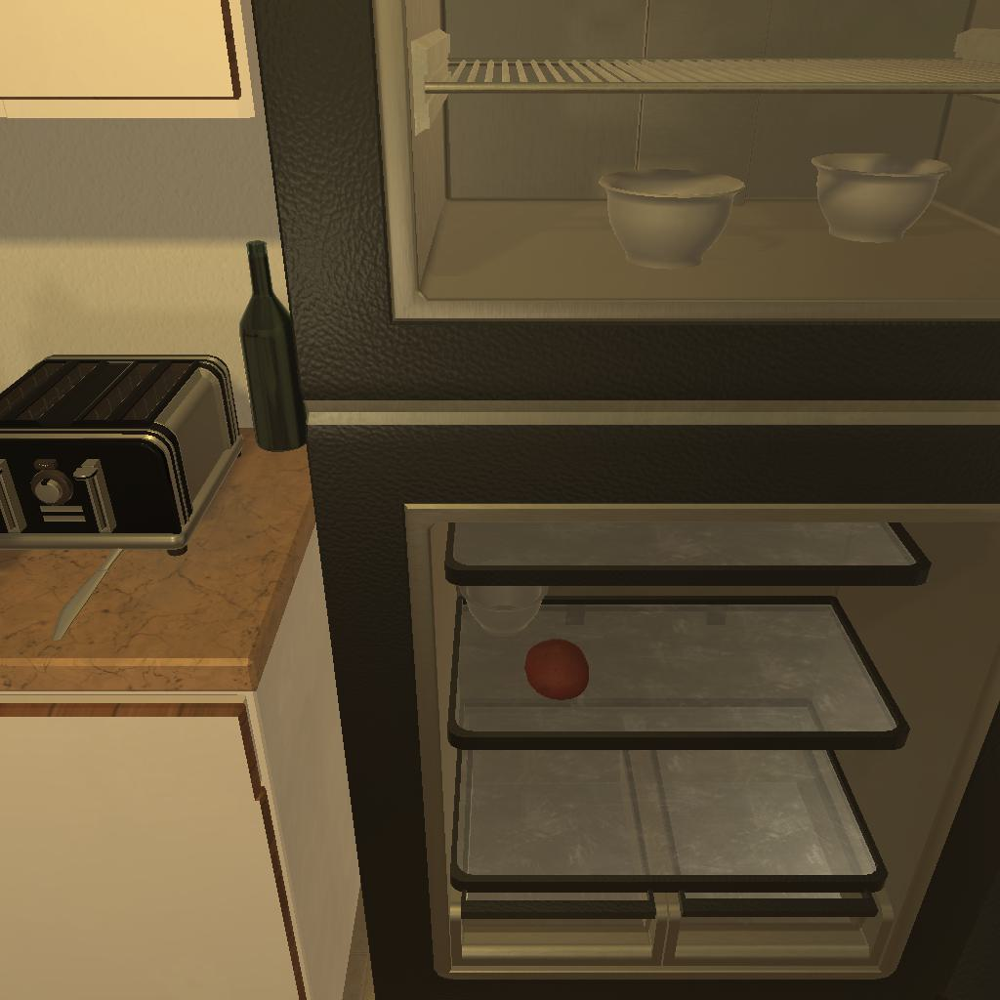

---------------------------------------------------------task: 14---------------------------------------------------------
--------------------------------------------------------------------------------------------------------------------------------------------------------------------
--------------------------------------------------------------------------------------------------------------------------------------------------------------------
Step:--------------------------------------------------------------------------17-------------------------------------------------------------------------------
----------------------------------------
VLM Prompt:
Image1:
**Instruction**
1. Analyze the provided image to identify all visible household objects, focusing on those relevant to the task description "cool some apple and put it in countertop."
2. Use the analysis of the image and the task hint "The agent must find an object of the desired type, pick it up, go to a fridge, cool the object with the fridge, then find the correct location to place it, and put it down there. The agent does not need to use the fridge button or open the fridge to cool the object, and the agent just needs to do action that is "cool the object with the fridge"." to answer the question: what is the most reasonable action in the choices for the task description "cool some apple and put it in countertop"?
4. Decide and write the answer using the template: The answer is: (i): , where i is the real number. If there is no desired object in the image, search every place based on **Initial Observation** to find the object. And if no one is exactly correct, choose a similar answer.
**Initial Observation**
You are in the middle of a room. Looking quickly around you, you can see microwave (1), countertop (1-2), cabinet (1-11), diningtable (1), drawer (1-3), sink (1), sinkbasin (1), toaster (1), stoveburner (1-4), fridge (1), coffeemachine (1), garbagecan (1)
**Answer Choices**
(1): go to microwave 1
(2): go to countertop 1
(3): go to cabinet 1
(4): go to diningtable 1
(5): go to drawer 1
(6): go to sink 1
(7): go to cabinet 2
(8): go to cabinet 3
(9): go to sinkbasin 1
(10): go to cabinet 4
(11): go to cabinet 5
(12): go to drawer 2
(13): go to countertop 2
(14): go to toaster 1
(15): go to cabinet 6
(16): go to stoveburner 1
(17): go to cabinet 7
(18): go to stoveburner 2
(19): go to stoveburner 3
(20): go to stoveburner 4
(21): go to drawer 3
(22): go to cabinet 8
(23): go to cabinet 9
(24): go to cabinet 10
(25): go to coffeemachine 1
(26): go to cabinet 11
(27): go to garbagecan 1
(28): close fridge 1
(29): take bowl 1 from fridge 1
(30): take bowl 2 from fridge 1
(31): take winebottle 1 from fridge 1
(32): take bowl 3 from fridge 1
(33): take potato 1 from fridge 1
(34): take butterknife 1 from fridge 1
**Answer**
Let's think step by step by following the instructions.
----------------------------------------
----------------------------------------
Original Response:
First, we need to identify all visible household objects. In the provided image, we can see a fridge with an apple on the lower shelf, two bowls on the upper shelf, and a wine bottle on the door shelf. There is also a toaster on the countertop.
Next, considering the task description "cool some apple and put it in countertop," we need to find an apple, cool it with the fridge, and then place it on the countertop. Based on the image and initial observation, we know there is an apple in the fridge, and we have two countertops to choose from.
The task hint clarifies that the agent does not need to use the fridge button or open the fridge to cool the object. The action required is to "cool the object with the fridge," which has already been done since the apple is inside the fridge.
Now, we need to place the cooled apple on the countertop. Based on the initial observation, there are two countertops, so we have two choices: countertop 1 or countertop 2.
Reviewing the answer choices, we can see that (2): go to countertop 1 and (13): go to countertop 2 are our relevant options.
Since the image shows the apple already in the fridge, the next reasonable action would be to take the apple from the fridge and place it on the countertop. However, there is no option to "take apple 1 from fridge 1," so we need to choose the closest action to complete the task.
The closest action to placing the apple on the countertop would be to go to the countertop. Since the image does not specify which countertop is the correct one to place the apple, either of the two options could be considered correct.
Therefore, we can choose either (2): go to countertop 1 or (13): go to countertop 2. Since we have to choose one, let's select (2): go to countertop 1 as it is the first option listed.
The answer is: (2): go to countertop 1.
----------------------------------------
----------------------------------------
>>> Refine Original VLM Response and Get Pure Action: go to countertop 1
----------------------------------------
-----------------------------------------------------------------
Running time: 15.456361055374146 seconds
Total Money: 4.604849999999999
-----------------------------------------------------------------
-----------------------------------------------------------------
Text Observation:You arrive at loc 1. On the countertop 1, you see a soapbottle 1, a cup 1, a knife 1, and a spatula 1.
-----------------------------------------------------------------
UNSUCCEED